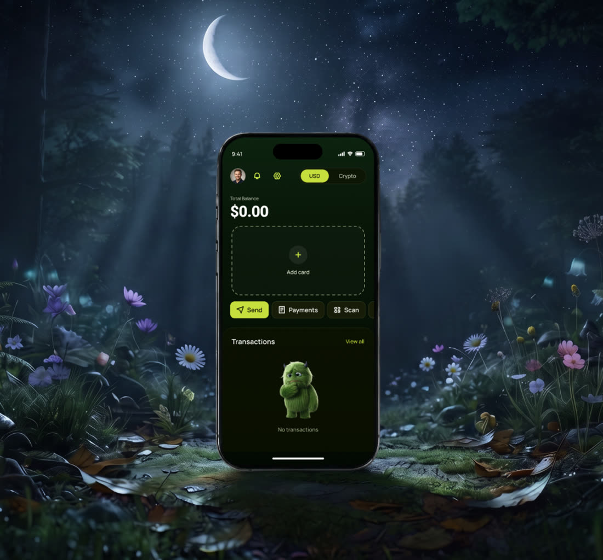
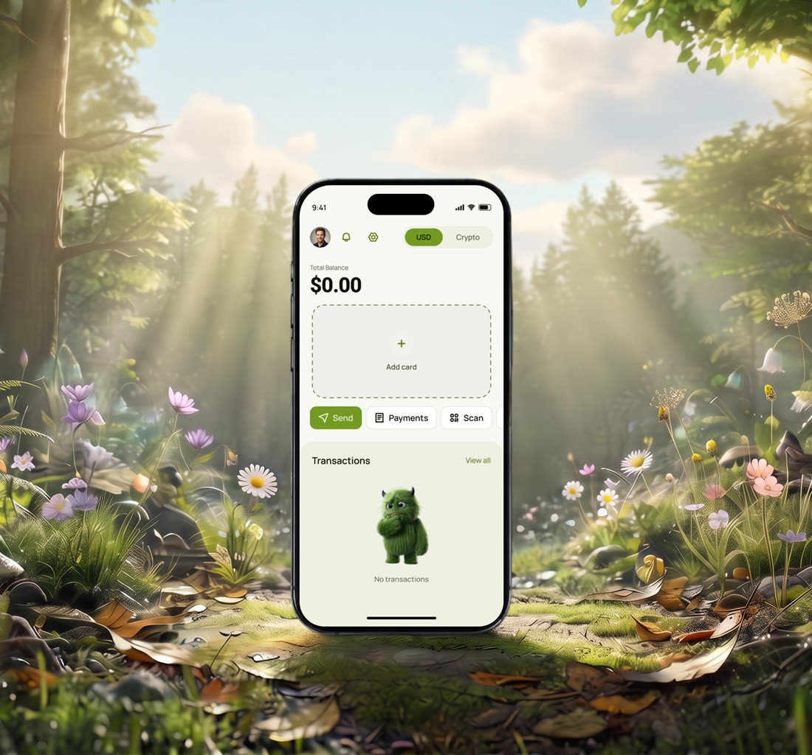

Mobile wallet
for fiat and crypto
transactions
- Scope
- Research · UX · UI · Brand direction
Project
Overview
A corporate mobile app that pays employees in crypto. Staff are onboarded through an admin panel where their documents, personal data, and payroll are managed, and salaries are automatically credited to a crypto account.
Each employee activates their account with credentials provided by the company, tracks their balance, and can convert crypto to dollars directly inside the app.

